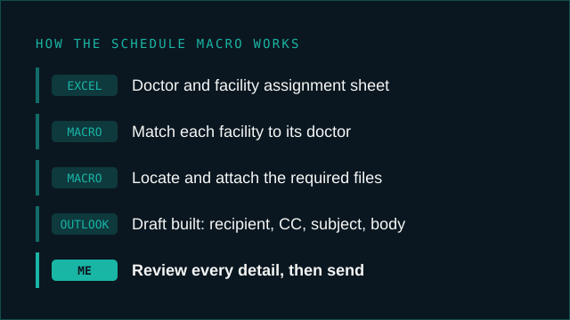

An Excel sheet holds the doctor and facility assignments. The macro matches each facility to its doctor, attaches the required files and builds the Outlook draft. I review every detail, then send. Illustration of the process, not a screenshot. No patient or facility data shown.